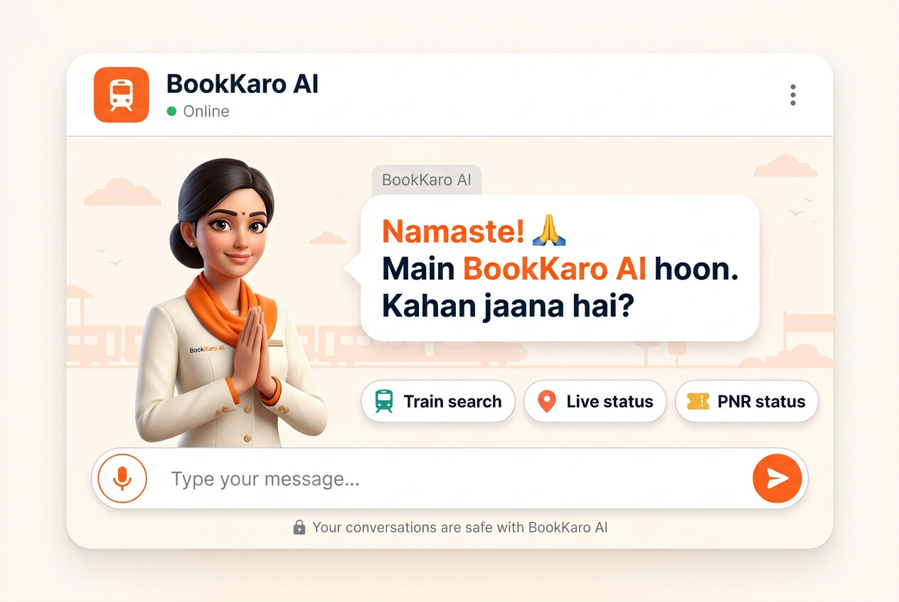

Horizontal 3:2 mobile-homepage concept. The concierge greets in Hindi and gestures — namaste, open-palm present, then a questioning tilt — with the bubble typing word-by-word in sync with the real voice.
For e-mail, README previews and browsers without inline video. 720 px wide, 11 fps.
Same composition as a still image — use it for app-store shots, og:image or any place video is not allowed.

Files: assets/hero-talking.mp4 (1.3 MB, H.264 + AAC),
assets/hero-talking.webm (0.7 MB, VP9),
assets/hero-talking.gif (3.3 MB),
assets/hero-concept-3x2.jpg, plus the three pose sprites
assets/pose-1-namaste.jpg, assets/pose-2-present.jpg,
assets/pose-3-question.jpg used by the live demo.